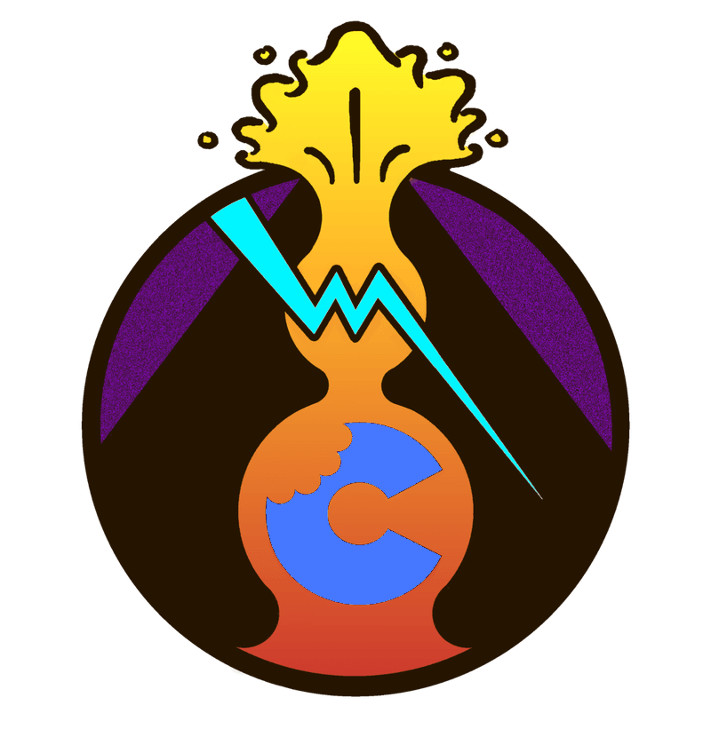

magmacrunch
media
media

est. 2023
sometimes it's quite melodious;
other times it's noise
other times it's noise
magmacrunch media is an independent record label and creative collective, founded in 2023 across Pennsylvania, California and New Hampshire. We release our own music, films, video games, web tools and writing, and we keep an archive of the people who made them. More about us.